Executive summary
read in 30 secondsCreatureCatalog.asset with a brain that runs.onnx files plus Fido's policy.jsonWhat is working
- IsaacBox is the strongest racer. Measured 0.99 m/s, zero falls per robot-minute,
8.09 targets reached per minute — now running
model_2999.pt, promoted in commitafa3eeb. - The port pipeline is exact. IsaacH1 reproduces to 1 mm; MujocoBiped's plumbing matches Python to float precision; Fido's exported MLP agrees to 2.0 × 10⁻⁶ max absolute error.
- Every prefab agrees with its brain. All twelve ML-Agents observation/action sizes match their ONNX tensor widths exactly — no silent shape drift.
What is not
- Four creatures do not finish. Worm, Spider, Centipede and Crab fail to reach the line on
the 22 m Flat map — the reason
BrokenLoco01.yamlexists. - Fido cannot steer. His 33 observations contain no goal and no heading, so he walks robustly at ~1.6 m/s and curves away from the finish. Policy limitation, not integration.
- Six trained brains never race. Blob, Kangaroo and the four bipeds are exported and
prefab-wired but absent from the catalog.
results/is gone, so their run history cannot be audited.
Systems_Elo, K = 32, base rating 1200) — never on mean reward.
The locomotion reward is potential-based, so its episode sum scales with how long the creature survived:
a brain that stands still for longer outscores one that races faster. Mean reward answers
"did training converge", not "is this brain better".Every creature and its state
9 racing · 7 benched · 3 removed.onnx graphs; spawn heights from
CreatureCatalog.asset. "Joints" is the actuated DOF count, which equals the action width.| Creature | Status | Body plan & behaviour | Joints | Obs | Network | Params | Bytes | Runtime path |
|---|---|---|---|---|---|---|---|---|
| IsaacBox | Racing | Humanoid boy, 22 links, 45 kg. Chases a target at ~1 m/s, facing it. The most capable racer on the grid and the only one measured at zero falls. | 21 | 75 | 128×3 ELU | 45,611 | 184,076 | Inference Engine, no ML-Agents |
| IsaacH1 | Racing | Unitree H1 humanoid, 20 links, 51.4 kg. Velocity-command walker — told a speed, not a target. 0.51 m/s, 0.125 falls/robot-minute. | 19 | 69 | 128×3 ELU | 44,435 | 178,875 | Inference Engine, no ML-Agents |
| Centipede | Racing | 18-segment many-leg crawler — the widest ML-Agents control problem. Authored lying along its body axis; stand it upright and the solver goes to NaN. | 17 | 70 | 256×2 swish | 88,497 | 359,276 | ML-Agents Agent_Creature |
| Hexapod | Racing | Insect, 6 legs × 2 joints. Alternating-tripod gait — the most stable multi-leg walker in the ML-Agents set. | 12 | 55 | 256×2 swish | 83,337 | 338,634 | ML-Agents Agent_Creature |
| Crab | Racing | Sideways scuttle on a wide, low stance. Same rig budget as Hexapod, different phase table. Does not finish the 22 m Flat map. | 12 | 55 | 256×2 swish | 83,337 | 338,634 | ML-Agents Agent_Creature |
| Quadruped | Racing | 4 legs × 2 joints, trot gait. Fastest of the coded-gait creatures on flat ground and the least stable on rough. | 8 | 43 | 256×2 swish | 79,209 | 322,122 | ML-Agents Agent_Creature |
| Spider | Racing | 8 legs × 1 joint, alternating-tetrapod. Does not finish the 22 m Flat map. | 8 | 43 | 256×2 swish | 79,209 | 322,122 | ML-Agents Agent_Creature |
| Fido | Racing | MuJoCo quadruped. Walks robustly at ~1.6 m/s — the fastest gait in the project — but has no goal in his observations, so over a long straight he traces a circle. | 8 | 33 | 128×3 SiLU | 39,506 | 851,712* | Hand-rolled MLP over MuJoCo |
| Worm | Racing | Six segments, serpentine body wave. The first slice, and the clock every curriculum lesson gates on. Does not finish the 22 m Flat map. | 5 | 34 | 256×2 swish | 76,113 | 309,738 | ML-Agents Agent_Creature |
| Grandma | Benched | Eleven joints of biped balance. Trained on extrinsic reward only — a biped's coded gait is a fall, so cloning it would teach it to face-plant faster. | 11 | 52 | 512×3 swish | 558,209 | 2,239,066 | ML-Agents, not in catalog |
| Grandpa | Benched | Same rig and hyperparameters as Grandma; separate weights. | 11 | 52 | 512×3 swish | 558,209 | 2,239,066 | ML-Agents, not in catalog |
| Matt | Benched | Same rig; separate weights. | 11 | 52 | 512×3 swish | 558,209 | 2,239,066 | ML-Agents, not in catalog |
| Nick | Benched | Same rig; separate weights. | 11 | 52 | 512×3 swish | 558,209 | 2,239,066 | ML-Agents, not in catalog |
| MujocoBiped | Benched | PPO biped ported from MuJoCo at 14.5 M steps. 4 targets per episode, 1.15 m/s closing speed, but survives a full episode only 30% of the time. No race adapter written. | 12 | 49 | 256×2 Tanh | 81,774 | 328,776 | Ported, unregistered |
| Kangaroo | Orphan | Two-legged hop with a counterweight tail. Trained and prefab-wired; never added to the catalog. | 6 | 37 | 256×2 swish | 77,145 | 313,866 | ML-Agents, not in catalog |
| Blob | Orphan | Soft-body pulse — five prismatic lobes that extend rather than rotate. The only non-revolute rig in the project, and the only one whose drive scale is metres. | 5 | 34 | 256×2 swish | 76,113 | 309,738 | ML-Agents, not in catalog |
| IsaacSpider | Removed | Deleted 2026-09-02. Raced brainless after the assembly merge renamed its inference define and silently compiled the policy out. | — | — | — | — | — | — |
| IsaacBiped2 | Removed | Deleted 2026-09-02, same cause as IsaacSpider. | — | — | — | — | — | — |
| Snake | Removed | Deleted 2026-09-02. Never got past 3 m. | — | — | — | — | — | — |
| 15 ONNX graphs + 1 JSON policy | — | — | — | 3,087,122 | 12,262,121 | 3 inference paths | ||
* Fido's figure is the size of
Assets/Creature/policy.json, not an ONNX file — his weights ship as JSON text, which is why
it is the largest single racer artifact despite having the second-smallest network.
Do not re-import IsaacSpider, IsaacBiped2 or the Snake without a brain that finishes a race.
Control problem size, per racer
Actuated joints against observation width. The 3N + 19 line is exact for every ML-Agents creature; the Isaac ports sit above it because they carry previous actions and full joint-velocity blocks instead of contact bits and terrain probes.
How a racer works
primary components and flowsEvery racer runs the same six-step loop, sixty times a second of simulated time. The only things that differ between a worm and a humanoid are the widths of the vectors and which engine solves the physics.


DecisionPeriod 20 × 0.005 s. The last action is re-applied on the
19 physics ticks in between.DecisionPeriod 20 → 25 on all twelve ML-Agents prefabs.
If Δt ever changes, every prefab's DecisionPeriod and Fido's actionDecimation
must change with it — otherwise trained brains are silently run at a rate they never saw.Behaviour evolution — the one run with surviving telemetry
The ML-Agents results/ directory is no longer in the working tree, so those runs cannot be
replayed. The Isaac Lab side does survive: two runs of the boy_chase_flat experiment, read
straight out of their TFEvents files. This is IsaacBox learning to walk toward a target from scratch.
Mean episode reward
Reward per episode across PPO iterations. 4,096 parallel environments × 24 steps = 98,304 transitions per iteration.
Distance to target
Metres. Falls as the policy learns to close on the target instead of standing still. Never reaches zero: the target is resampled every 8–12 s at 3–10 m.
Episode length
Steps out of a 1,000-step (20 s) cap. Rising means the boy stops falling over — the clearest single signal that balance is being learned.
Targets reached per episode
How many goals the boy actually got to in a 20 s episode. The task metric that matters, as opposed to the shaped reward.
Policy standard deviation
Action noise the policy still chooses to inject. Settles at 0.86 from an initial 1.0 — exploring, not collapsed. A crash toward zero would mean premature convergence.
Fall rate (base contact terminations)
Fraction of episodes ended by the hips or spine touching the ground. Starts at 100% — a fresh policy is a ragdoll — and settles near 2%.
full is the 2,016-iteration training run
whose model_2000.pt is the checkpoint the shipped ONNX was exported from. finish
resumes from exactly there — its x-axis starts at iteration 2000 — and runs the experiment out to its
configured 3,000, ending at model_2999.pt. The steep climb over its first ~30 iterations is
not the policy relearning: it is RSL-RL's running-mean buffers refilling after the resume. By
iteration 2030 it is already back at reward 17.5 and 720-step episodes.model_2999.pt was promoted — and it scores less reward than
the brain it replaced. Commit afa3eeb (2026-09-03 10:13) re-exported the shipped ONNX from
the finish run's last checkpoint. Mean reward went down, 24.37 → 22.68, and mean speed dipped
0.9916 → 0.9869 m/s. On the metric the task is actually scored by, it went up:
8.09 targets reached per minute against 7.91, falls still exactly 0.0, episode length
986.4 → 995.9 steps. This is the promotion rule working in the direction that is easy to get wrong —
a reward-ranked pipeline would have rejected the better brain. The graph is structurally unchanged
(184,076 bytes, 45,611 parameters); only the weights moved.Measured performance — where numbers actually exist
These are independently measured evaluation figures from each port's rig manifest, not training rewards. They are the only cross-creature performance data in the project.
Measured locomotion speed
Metres per second, sustained. Fido is the fastest gait in the project and the only one
that cannot aim it. Values from eval blocks in each rig manifest and from Fido's
verification scene.
Reliability — falls per robot-minute
Lower is better. Zero means IsaacBox did not fall once across the whole evaluation window.
The eight ML-Agents creatures have no surviving measurement
Their training runs lived under
results/<run-id>/, which is not in the working tree. What is known about them is
qualitative and comes from race observation:
- Reach the finish on 22 m Flat: Quadruped, Hexapod
- Do not reach the finish: Worm, Spider, Centipede, Crab — the four
BrokenLoco01.yamlwas written to fix - Never raced: Blob, Kangaroo
Restoring
auditability means preserving results/ on future runs. Without it, no promotion decision
can be re-checked.
Reward_WormLoco.Step() runs every FixedUpdate and all of its per-step constants were tuned at
a 0.02 s step. The project moved to 0.005 s on 2026-08-29 and nothing told the reward until 2026-09-02.
For those four days, training episodes were cut at 5 s of no progress instead of 20, and every
per-step penalty landed four times per simulated second. Measured: fine-tune episodes lasted
50–85 decisions instead of 340–380. Every brain trained in that window — broken_loco01
included — learned against a distorted reward. Agent_Creature now calls
ConfigureTimestep(Time.fixedDeltaTime), which rescales both the stall limit and the shaping
terms; the progress term is a telescoping sum and correctly needs no scaling.Colour is a legend, not decoration
A viewer must be able to tell what is driving a racer at a glance, so colour encodes the controller, never the creature.
Heuristic and hand-coded bots. Always. A red racer is running a sine-wave gait table, not a network.
The standard RL policy — the baseline only, before any per-creature variation. Not every RL racer.
RL variations derived from the baseline wear user-supplied textures. A variation with no texture yet waits rather than borrowing red or green.
IsaacBox_Character.glb — skin, shirt, trousers, shoes, hair — and must not be
turned green. Anything arriving with authored art is read the same way: ask before overriding a creature's
own materials with a legend colour.The race itself
Systems_MapCatalog.Entries. Lengths are finish-line placements;
the raced distance is ~2 m less because the grid sits ahead of the origin.| Map | Length | TrackKind | Features | Blurb |
|---|---|---|---|---|
| Flat | 22 m | Flat | None | Clean open ground — a pure speed test |
| Lumpy | 18 m | Lumpy | None | Rough hills with chunky rocks to dodge |
| Swamp | 18 m | Swamp | Mud pits, gate walls | Mud slows racers; gates force a path choice |
| Gale | 20 m | Flat |
Gusts | BoostPads | Cross-winds shove the pack; boost pads reward a brave line |
| Roulette | 18 m | random | random | Fresh terrain and hazards every race |
attachedArticulationBody and skip him), and he collides only with other Fidos. On the
displaced-terrain maps he would walk through the ground; MjHeightFieldShape is the route to
fixing that. Also: do not let the spawner's +0.05 m drop reach him.
Agent_Fido.SnapToTrainedStance cancels it and puts his torso at exactly 0.34 m. Measured,
0.39 m collapses on the first stride every time; 0.34 m walks away.Complete specification
tensors, physics, hyperparameters, telemetryTier 3 is written for the Technical view. Switch modes above to see the tensor graphs, joint tables and hyperparameter matrices; the summary tables below are visible either way.
Tensor blueprint & actuator map

xDrive actuator map, and how each of the four ports differs.
ONNX graph node inventory — the twelve ML-Agents brains
Node-for-node identical apart from tensor widths. All twelve report
producer pytorch 2.4.1, ir_version 4, opset ai.onnx v9, and an
empty metadata_props — which is why run provenance cannot be recovered from the file
and has to live in the YAML headers instead.
Worm_v01.onnx (12 initializers). Every other ML-Agents brain
matches.| Op | Count | Role |
|---|---|---|
Sub / Div / Clip | 1 / 3 / 3 | Baked observation normaliser (normalize: true), plus the action clamp and ÷3 rescale |
Gemm | 3 | seq_layers.0 W(256, obs) · seq_layers.2 W(256, 256) · mu W(N, 256) |
Sigmoid / Mul | 2 / 4 | Two swish activations — x · sigmoid(x) |
Exp | 1 | log_sigma → sigma |
RandomNormalLike | 1 | The stochastic sample. This is what makes continuous_actions non-deterministic —
race inference reads deterministic_continuous_actions instead |
Add / Concat / Constant / Identity |
2 / 1 / 3 / 3 | Bias adds and output plumbing |
| Output | Shape | Consumer |
|---|---|---|
continuous_actions | (batch, N) | Training rollouts — sampled |
deterministic_continuous_actions | (batch, N) | Race inference — the mean, no sampling |
version_number | (1) | ML-Agents API compatibility check |
memory_size | (1) | 0 — no LSTM in any shipped brain. Earlier documentation claimed an optional LSTM(128); there is none |
continuous_action_output_shape | (1) | Runtime shape assertion |
The ports are deliberately plainer graphs
| Port | Ops present | Why it differs |
|---|---|---|
| IsaacH1 | Gemm, Elu |
The RSL-RL normaliser was not baked in; the Unity agent normalises before the call |
| IsaacBox | Concat, Sub, Div, Gemm, Elu |
The fitted normaliser is baked in (obs_normalization_baked_into_onnx: true),
so Unity feeds raw observations — deliberately unlike IsaacH1 |
| MujocoBiped | Gemm, Tanh, Clip, Mul, Sub, Constant |
Tanh-squashed policy with an explicit output rescale |
None of the three carries a RandomNormalLike: they export the
deterministic actor directly. Fido is not ONNX at all — a 33→128→128→128→16 SiLU MLP in
policy.json, with its own 33-wide mean/std normaliser in the same
file, verified against the Python reference to 2.03e-06 max absolute error.
Observation vector layouts
ML-Agents creatures — obs = 3N + 19
Verified on all twelve. Every element passes through Safe() /
SafeVector(), because one NaN aborts the Academy step for every agent in the scene.
Agent_Creature.CollectObservations, exact index ranges and normalisation.| Range | Width | Contents | Normalisation |
|---|---|---|---|
| [0, 3N) | 3 × N | jointPosition[0], jointVelocity[0], IsGrounded |
÷ (_jointDriveScale · Deg2Rad), clamp ±1 · ÷ 10 rad·s⁻¹, clamp ±1 · 1.0 or 0.0 |
| [3N, 3N+3) | 3 | root.up |
World-space unit vector, raw |
| [3N+3] | 1 | root.position.y |
Raw metres, unnormalised |
| [3N+4, 3N+7) | 3 | Goal direction | InverseTransformDirection(toGoal.normalized) — root-local |
| [3N+7] | 1 | Goal distance | clamp01(|toGoal| / 20 m) |
| [3N+8, 3N+11) | 3 | Root linear velocity | Root-local, ÷ 2 m·s⁻¹, ClampMagnitude 1 |
| [3N+11, 3N+14) | 3 | Root angular velocity | Root-local, ÷ 20 rad·s⁻¹, ClampMagnitude 1 |
| [3N+14] | 1 | Stamina | 0 … 1 |
| [3N+15, 3N+19) | 4 | Terrain look-ahead | Raycast down from +3 m, range 6 m, at 0.5 / 1.2 / 2.2 / 3.5 m along flattened forward;
(hit.y − root.y) / 2, clamp ±1 |
IsaacBox — 75 floats, and this ordering is a contract
chase_env_cfg.py and IsaacBoxAgent reproduce this index
by index. Change one side and you must change both — the comment in the Python says so explicitly:
"ORDER MATTERS: this is the ONNX input layout Unity reproduces index by index."
| Term | Start | End | Dim | Training noise |
|---|---|---|---|---|
base_lin_vel | 0 | 3 | 3 | ±0.10 |
base_ang_vel | 3 | 6 | 3 | ±0.20 |
projected_gravity | 6 | 9 | 3 | ±0.05 |
target_pos_b | 9 | 12 | 3 | — |
joint_pos (rel. to default) | 12 | 33 | 21 | ±0.01 |
joint_vel (rel.) | 33 | 54 | 21 | ±1.50 |
actions (previous) | 54 | 75 | 21 | — |
IsaacH1 is the same seven terms at 69 wide, with
velocity_commands(3) where IsaacBox has target_pos_b(3) and 19-wide joint blocks:
[0,3) [3,6) [6,9) [9,12) [12,31) [31,50) [50,69).
gravity_local(3) · linvel_local(3) · angvel_local(3) · joint_pos(8) · joint_vel(8) ·
last_action(8). There is no goal term and no heading term anywhere in that list — he
describes only his own body. He walks robustly and curves, because nothing in his input tells him which
way the finish line is. This reproduces in the original drop's own verification scene at its own settings,
so it is the policy, not the integration. Fixing it means retraining with a heading observation:
OBS_LAYOUT in training/fido/creature_env.py is a contract with
CreatureAgent.BuildObservation — change one, change both.clipLinVel 10, clipAngVel 10, clipJointVel 20,
maxTargetDistance 10). MuJoCo's free joint stores qvel[3:6] in the
body-local frame, and env.py's _get_obs applies rotᵀ to it
anyway — so obs[7:10] is Rᵀ Rᵀ ω_world, double-rotated. The manifest says it
plainly: reproduce it, do not fix it. The policy was trained on it.Joint physics & actuator specification
Assets/Prefabs/*.prefab. All ML-Agents rigs are
ArticulationBody chains on xDrive (PhysX implicit PD). No
ConfigurableJoint and no SLERP drive exists anywhere in the project — earlier
documentation claimed both.| Creature | Bodies | DOF | Joint type | Kp | Kd | forceLimit | Drive scale | Gait Hz |
|---|---|---|---|---|---|---|---|---|
| Worm | 6 | 5 | Revolute ±45° | 6750 | 450 | 1350 | 45° | 0.796 |
| Blob | 6 | 5 | Prismatic | 2500 | 166.67 | 500 | 0.3 m | 0.6 |
| Kangaroo | 7 | 6 | Revolute ±60° | 4250 | 283.33 | 850 | 60° | 1.2 |
| Spider | 9 | 8 | Revolute ±40° | 3000 | 200 | 600 | 40° | 0.796 |
| Quadruped | 9 | 8 | Revolute ±45° | 4500 | 300 | 900 | 45° | 1.0 |
| Crab | 13 | 12 | Revolute ±45° | 3500 | 233.33 | 700 | 45° | 0.9 |
| Hexapod | 13 | 12 | Revolute ±45° | 3500 | 233.33 | 700 | 45° | 0.9 |
| Centipede | 18 | 17 | Revolute ±35° | 4000 | 266.67 | 800 | 35° | 0.9 |
| Bipeds ×4 | 12 | 11 | Revolute ±60° | 1000 / 837.5 | 66.67 / 55.83 | 200 / 167.5 | 60° | 1.1 |
ArticulationJointType.Fixed, which is why bodies
always equal DOF + 1._maxJointTorque is
670, which matches neither drive tier (200 or 167.5). Since that constant is only the
denominator in ComputeNormalizedTorque(), biped fatigue reads roughly 3× lower than
the other creatures at the same real load — the stamina pool barely drains. Worth fixing before they are
ever added to the catalog.Fatigue — the one mechanic shared by all ML-Agents creatures
Constants
| Sustainable torque fraction | 0.50 |
| Drain at full overload | 0.25 / s |
| Recovery at rest | 0.15 / s |
| Minimum power factor | 0.55 |
| Drive-write epsilon | 0.005 |
At full overload a fresh pool empties in ~4 s; a resting creature refills it in ~6.7 s. An empty pool still leaves 55% of authored joint power, so tired racers slow down instead of collapsing.
Three rules that are easy to get wrong
- Load is read from applied torque, not the action vector. Isometric bracing holds
near-maximum torque while the action barely moves — read
jointForce, neverActionBuffers. - Fatigue is cleared before motors are restored.
OnEpisodeBegincallsRestoreDriveBaseline()first, then lets the area reset re-author drives and quirks on top of clean values. - The baseline is captured lazily. Spawn-time quirk scaling lands a frame after
instantiation, so capturing eagerly would bake a pre-quirk baseline.
NotifyDrivesChanged()invalidates it.
Drives are rewritten only when the power factor moves more than 0.005, so a steady cruise costs zero drive writes.
IsaacBox actuator map — 21 joints in ONNX action order
isaacbox_rig.json, rewritten from the live sim by
export_bundle.py. All armatures 0.0. 22 links, 45.0 kg, 4/4 solver iterations, TGS,
self-collisions off. target = default + 0.5 · action.| Index | Joint | Family | Kp | Kd | Effort limit |
|---|---|---|---|---|---|
| 0 | spine_pitch | spine | 400 | 15 | 200 |
| 1–2 | hip_yaw_L/R | legs | 80 | 3 | 150 |
| 3–4 | shoulder_roll_L/R | arms | 30 | 3 | 40 |
| 5–6 | hip_roll_L/R | legs | 100 | 4 | 150 |
| 7–8 | shoulder_pitch_L/R | arms | 30 | 3 | 40 |
| 9–10 | hip_pitch_L/R | legs | 150 | 5 | 150 |
| 11–12 | shoulder_yaw_L/R | arms | 30 | 3 | 40 |
| 13–14 | knee_L/R | legs | 150 | 5 | 150 |
| 15–16 | elbow_L/R | arms | 20 | 2 | 40 |
| 17–18 | ankle_pitch_L/R | feet | 30 | 3 | 50 |
| 19–20 | ankle_roll_L/R | feet | 20 | 2 | 50 |
Hips sit at 0.76 m at zero pose and 0.744 m at the default pose; Isaac spawn is
[0, 0, 0.764] and the race catalog carries spawnHeight 0.714. Stiffness is
strongly graded by function: the spine is five times stiffer than a hip yaw and twenty times stiffer than
an elbow, because the torso must hold while the limbs must comply.
Hyperparameter & trainer specification


Config/*.yaml and
ISAAC/boy_tasks/boy_tasks/agents/rsl_rl_ppo_cfg.py.| Parameter | AllLoco8h02 8 creatures |
AllLoco8h02 4 bipeds |
BrokenLoco01 fine-tune |
Isaac RSL-RL boy_chase_flat |
Humanoids02 SAC, unshipped |
|---|---|---|---|---|---|
| Algorithm | PPO | PPO | PPO | PPO (RSL-RL) | SAC |
| Hidden units | 256 × 2 | 512 × 3 | 256 × 2 | 128 × 3 | 256 × 2 |
| Activation | swish | swish | swish | ELU | swish |
| Batch size | 2048 | 2048 | 2048 | 24 steps × 4096 envs | 256 |
| Buffer size | 20 480 | 20 480 | 20 480 | 98 304 / iter | 500 000 |
| Learning rate | 3e-4 linear | 3e-4 linear | 3e-4 linear | 1e-3 adaptive | 3e-4 constant |
| Entropy / beta | 0.005 | 0.005 | 0.005 | 0.01 | init_entcoef 0.5 |
| Clip ε | 0.2 | 0.2 | 0.2 | 0.2 | — |
| γ (gamma) | 0.995 | 0.995 | 0.995 | 0.99 | 0.99 |
| λ (lambd) | 0.95 | 0.95 | 0.95 | 0.95 | — |
| Epochs | 3 | 3 | 3 | 5, 4 minibatches | steps_per_update 1 |
| Normalize obs | true | true | true | true, baked into ONNX | true |
| Max steps | 3 200 000 | 30 000 000 | 300 000 | 3000 iterations | 10 000 000 |
| Time horizon | 1000 | 1000 | 1000 | 1000 steps (20 s) | 500 |
| Extrinsic | strength 1.0 | strength 1.0 | strength 1.0 | 17 weighted terms | strength 1.0 |
| GAIL | 0.05 | none | none | — | 0.1 (bipeds) |
| Behavioral cloning | 0.3, 400k steps | none | none | — | 0.2, 500k (bipeds) |
| Curriculum | 8 parameters, progress-gated | ignores it | none — pinned to the race | domain randomisation instead | 4 stages, keyed on Grandma |
| Checkpoint interval | 250 000 | 100 000 | 40 000 | every 50 iters | 100 000 |
BrokenLoco01 also drops BC/GAIL, for the opposite
reason: it would pull the policy back toward the coded crawl it was written to escape. (3) The Isaac
side uses an adaptive learning rate targeting a KL of 0.01 rather than a linear schedule, which is
why its LR is visible in the telemetry falling from 1e-2 to 6e-4 on its own.The curriculum ladder — all eight parameters
completion_criteria still requires a behavior name; Worm is just the clock.| Parameter | Lesson 1 | → | Lesson 2 | → | Lesson 3 (race day) |
|---|---|---|---|---|---|
| goal_distance_max | near 8 m | .10 | mid 14 m | .30 | far 20 m |
| goal_angle_span | straight 0° | .15 | gentle 20° | .35 | sharp 40° |
| rough_amplitude | gentle 0.35 | .10 | medium 0.70 | .30 | full 1.0 |
| track_kind | Flat (0) | .15 | Lumpy (6) | .40 | Swamp (7) |
| hazard_level | clean (0) | .20 | mud + boost (1) | .45 | full hazards (2) |
| quirk_power_span | 0 | .10 | 0.05 | .30 | 0.08 |
| quirk_mass_span | 0 | .10 | 0.06 | .30 | 0.12 |
| quirk_friction_span | 0 | .10 | 0.15 | .30 | 0.30 |
Why progress and not reward. The locomotion reward is potential-based, so its scale drifts with episode length. Progress is a shared clock: every behavior steps at the same rate, so lessons advance together and slow learners are no longer dragged along by the Worm's score. Order of arrival: 10% goals lengthen, terrain roughens, quirks begin · 15% goals swing off-centre, map turns lumpy · 20% mud and boost pads · 30–45% everything at race-day strength, gusts and gates last.
Isaac Lab domain randomisation — the substitute for a curriculum
Startup (once per environment)
- Robot shape friction: static 0.6–1.0, dynamic 0.4–0.8, 64 buckets. The ground stays 1.0/1.0 and PhysX multiplies, so the effective pair friction is whatever is drawn here.
- Spine mass × log-uniform 1/1.25 … 1.25
Reset (every episode)
- Pose ±0.5 m in x and y, yaw ±π — a full random heading
- Velocity ±0.3 m/s linear, ±0.3 rad/s angular
- Joints reset at exactly the default pose (range 1.0–1.0): it is a precise standing pose and must not be scaled randomly
Interval
- Shove at ±0.5 m/s every 10–15 s
Task geometry
| Target radius range | 3–10 m |
| Reach radius | 0.5 m |
| Resample interval | 8–12 s |
| Target speed | 1.0 m/s |
| Observation clip | 5.0 m |
| Episode length | 20 s |
| Environments | 4096 |
| Env spacing | 2.5 m |
The _PLAY config
drops to 64 envs, extends episodes to 40 s, and turns every source of randomness off —
observation corruption, pushes, mass randomisation — with friction pinned to 0.8/0.6. The reference
recording must be deterministic, or the Unity port has nothing exact to be checked against.
Multi-objective reward tree


ML-Agents creatures — Reward_WormLoco
| Term | Constant | Kind | × stepScale? | Rationale |
|---|---|---|---|---|
| Progress | 1.0 / m | Task | No | Potential-based. The episode sum telescopes to net metres of approach — correct at any timestep, so scaling it would be wrong. |
| Goal bonus | +10 | Terminal | No | Awarded once, within a 0.5 m radius. |
| Time penalty | −0.002 | Shaping | Yes | Races are won on time. A full 3000-step episode costs 6, comfortably under the +10 goal bonus, so finishing always beats stalling. |
| Energy | −0.05 · τ̂² | Shaping | Yes | Physiological τ² cost, from applied torque. |
| Upright | +0.02 · upright⁺ | Shaping | Yes | dot(root.up, world.up), negatives floored at zero. |
| Jerk | −0.01 · jerk | Shaping | Yes | Mean per-joint action delta, clamped 0–2. Buys smooth gaits. |
| Skate | −0.025 · slip | Shaping | Yes | Horizontal foot velocity while grounded, clamped 0–5. Closes the ice-skating exploit. |
| Out of bounds | −1 | Terminal | No | root.y < −1 m, distance > 500 m, or NaN. EndEpisode(). |
| Stall | −0.5 | Truncation | No | No 0.05 m gain for 20 s. EpisodeInterrupted(), not EndEpisode() —
the value function is bootstrapped, so the agent is not taught the world ends. |
IsaacBox — 17 weighted terms, and what each actually earns
Reward composition at the end of training
Mean episodic return per second for each of the 17 terms, at the final iteration of the 2,016-iteration run. RSL-RL divides the episodic sum by episode length, so × 20 s ≈ the mean reward of 24.37. Positive terms earn; negative terms are the price paid for earning them.
target_speed_exp (weight 1.5)
earns 1.32/s — it is the whole engine of the behaviour. Everything else is either a small nudge toward the
target (target_progress 0.31, heading_to_target 0.28), a gait-quality bonus
(feet_air_time 0.24, which is what buys real steps instead of a shuffle), or a regularisation
cost. The largest single cost is action_rate_l2 at −0.23 — the policy pays more for jerky
actuation than for anything else, which is why the resulting gait looks smooth. Note
targets_reached: weight 5.0, the largest in the config, but it earns only 0.012/s because it
fires rarely. And termination_penalty at weight −200 costs just −0.005/s because the boy
almost never falls — a huge weight that is almost never collected is exactly what a working balance
term looks like.chase_env_cfg.py and the run's TFEvents.| Term | Group | Weight | Earned / s | What it buys |
|---|---|---|---|---|
| target_speed_exp | Task | 1.5 | +1.3238 | Close on the target at ~1 m/s (exponential, std 0.5) |
| target_progress | Task | 0.5 | +0.3096 | Raw approach rate, capped at 1.5 m/s |
| heading_to_target | Task | 0.3 | +0.2795 | Face the target, do not crab sideways |
| targets_reached | Task | 5.0 | +0.0122 | The sparse win condition |
| feet_air_time | Gait | 1.0 | +0.2353 | Real strides, threshold 0.6 s per foot |
| undesired_contacts | Gait | −1.0 | 0.0000 | Thighs, shins, arms off the ground — fully learned |
| feet_slide | Gait | −0.25 | −0.0581 | No skating on a planted foot |
| termination_penalty | Terminal | −200.0 | −0.0047 | Do not fall. Huge weight, almost never collected |
| action_rate_l2 | Reg. | −0.005 | −0.2262 | Smooth actuation — the biggest single cost |
| dof_torques_l2 | Reg. | −1.0e-5 | −0.1652 | Energy |
| joint_deviation_arms | Reg. | −0.2 | −0.1626 | Arms near neutral |
| dof_acc_l2 | Reg. | −1.25e-7 | −0.1257 | Joint acceleration |
| joint_deviation_hip | Reg. | −0.2 | −0.0639 | Hip yaw and roll near neutral |
| ang_vel_xy_l2 | Reg. | −0.05 | −0.0534 | No torso wobble |
| joint_deviation_torso | Reg. | −0.1 | −0.0479 | Spine pitch near neutral |
| flat_orientation_l2 | Reg. | −1.0 | −0.0176 | Stay level |
| dof_pos_limits | Reg. | −1.0 | −0.0037 | Ankles off their end stops |
| Sum | +1.2313 | × 20 s ≈ 24.6, against a measured mean reward of 24.37 | ||
Terminations
IsaacBox
time_outat 20 s — 97.9% of episodes at the end of both runsillegal_contacton hips or spine, threshold 1.0 N — 2.1%, down from 100% at iteration 0. A fresh policy is a ragdoll; a trained one falls once in fifty episodes
ML-Agents creatures
- Goal reached within 0.5 m →
EndEpisode() - NaN root position or up-vector →
EndEpisode(),Failed = true - root.y < −1 m or distance > 500 m → same. A solver blow-up reaches absurd-but-finite coordinates long before it reaches NaN, and every step in between feeds garbage to the trainer
- No progress for 20 s →
EpisodeInterrupted()
Gaps, risks and what to do next
| Issue | Severity | Evidence | Fix |
|---|---|---|---|
results/ is gone | High | Directory absent from the working tree; no ML-Agents run history, no mean rewards, no run IDs | Nothing to recover. Preserve it on future runs, or no promotion decision can ever be re-audited. |
| Four creatures do not finish | High | Worm, Spider, Centipede, Crab on 22 m Flat | BrokenLoco01.yaml exists for this. Ship a retrained brain only if it beats
the incumbent in an actual race. |
| Brains trained 08-29 → 09-02 saw a distorted reward | High | Episodes 50–85 decisions instead of 340–380; stall limit firing at 5 s instead of 20 | Already fixed in code (ConfigureTimestep). Retrain anything from that window;
broken_loco01 is affected. |
| Fido cannot steer | Medium | No goal or heading term in his 33 observations; reproduces in the original verification scene | Retrain with a heading observation. OBS_LAYOUT and
CreatureAgent.BuildObservation must change together. |
| Biped fatigue reads ~3× low | Medium | _maxJointTorque = 670 against drive force limits of 200 and 167.5 |
Set it to the real limit before the bipeds ever enter the catalog. |
| Six trained brains unused | Medium | Blob, Kangaroo, 4 bipeds exported and prefab-wired, absent from CreatureCatalog.asset |
One catalog entry each. Check Blob's 0.3 m prismatic drive scale survives spawn quirk scaling. |
| MujocoBiped has no adapter | Low | ONNX ported and verified; no ICreatureAgent implementation |
An Agent_MujocoBiped adapter plus a catalog entry. Note it survives a full episode
only 30% of the time. |
| Demos rejected after any obs change | Low | AllLoco8h02.yaml needs Assets/Demonstrations/<Name>.demo for BC + GAIL |
Re-record via PoRacer/Training/Enable Demo Recorders In Open Scene whenever the
observation size changes — an old .demo carries the old size and mlagents rejects it. |